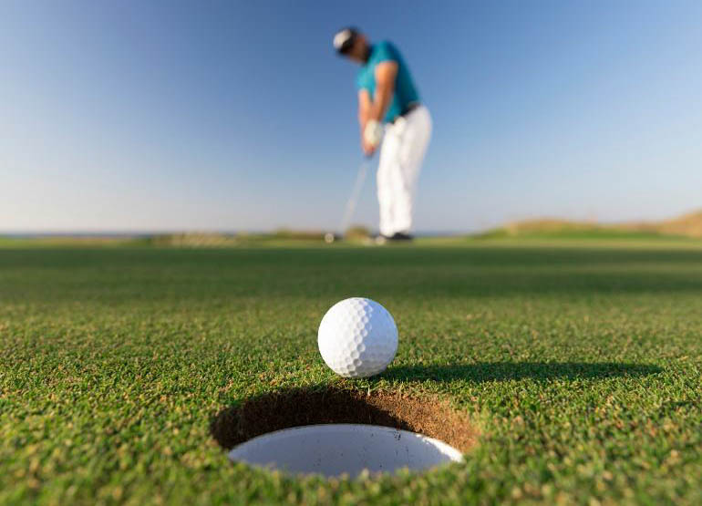

Golfçünün gerçek rakibi diğer oyunculardır. Fakat saha zorlayıcı olduğundan rakip "golf sahasının kendisi" olarak görülür. Bu prensip nedeniyle profesyonel golf, sportmenliğe değer verenlerin en yüksek seviyede ödüllendirildiği, sportmen olmayanların kendilerini dışında buldukları bir dünyadır. Golf, iki ana prensip üzerine inşa edilen kurallar üzerinde durmaktadır: Oyuncuya ve sahaya saygı.
Bu prensiplere sıkı sıkıya bağlı hareket edilmesi sayesinde bu spor bu kadar yaygınlaşmış ve sevilmiştir. Golfün geçer akçesi “saygı”dır. Günümüzde çok ilgi çeken ve milyarlarca dolar değerinde bir endüstridir golf.
Oyuncuya Saygı Bir golfçü vuruş hazırlığına başladıktan sonra vuruşu bitene kadar hareket etmeyiniz, konuşmayınız.
Vuruş hazırlığı, golfçü vuruş yapacağı sopasını çantasından aldığı anda başlar. Genelde vuruşu yapmadan önce her oyuncunun izlediği bir ritüel vardır. Bu ritüel yaklaşık 30-40 saniye sürebilir. İşte bu süre oyuncunun konsantrasyonu için çok önemlidir. Bu sırada etraftaki oyuncular ya da seyirciler arasında konuşanlar olursa vuruşu yapacak kişi konsantrasyonunu kaybeder.
Vuruş yaparken arkasında ya da onu rahatsız edecek kadar yakın durmayınız. En doğru yer tam hizasında ve karşısında durmaktır.
Her insanın kendince bir güvenli alanı vardır. Bu güvenlik alanına girerseniz diğer kişi sizin varlığınızı hisseder. Elinde sopayla vuruş yapacak olan oyuncu eğer güvenlik alanında birini algılarsa konsantrasyonu bozulabilir.
Green'de pata hattında durmayınız. Pata yaparken ona yakın durmayınız. Tercihen oyuncu pata yaparken Wusiz green dışında sakince sıranızı bekleyiniz.
Genelde insanlar oyunda bencil davranırlar. Sıranın hemen kendilerine gelmesini isterler. Diğer oyuncunun rahatsız olacağı hareketleri bilinçsizce yapabilirler. Bunlar doğal karşılanabilecek, zamanla oyuncu oyunu ve kuralları öğrendikçe düzeltilebilecek yanlışlardır.
Golfün en önemli özelliği sportmenliği öne çıkaran ve yüzyıllardır değişmeyen etik kurallarıdır.

Sahaya Saygı
Burada unutulmaması gereken konu şu: Golf sahalarını ortaklaşa kullanıyoruz. Eğer sahaya biz yeterli saygıyı göstermezsek, hiçbir saha bakım elemanı sahalarda bozulan yerleri tamir edecek zamanı bulamaz. Bunu unutmamak gerek. Sahayı nasıl bulmak istiyorsanız öyle bırakınız.
Vuruş sırasında sahada hasar verdiğiniz yerleri tamir ediniz.
Çim kapaklarını yerine koyunuz. Green'deki top izlerinizi onarınız.
Kum engelinde bıraktığınız izleri düzeltiniz.
Her çukur özel olarak işaretlenmiş tee adı verilen başlangıç yeri ve green adı verilen ve bunun içinde bir direk ucunda asılı bayrakla işaretlenmiş olan parkurun bittiği çukurla sonuçlanır. Her çukurun par adı verilen ve topun kaç vuruşta çukura atılacağını belirleyen tanımı vardır: Örneğin, par 3, par 4, par 5 gibi; yani üç vuruşta, dört vuruşta ve 5 vuruşta golf topunun çukura atılması.
O parkurdaki oyunun tamamlanması için topun mutlaka kaç vuruşta olursa olsun çukura atılması gerekir. Çukurun içinde metal veya plastikten yapılmış çanak cup bulunur. Çukurun çapı 10,8 cm, derinliği ise 10 cm civarındadır.
Oyun genelde en az iki, en çok dört kişi tarafından oynanır. Oyun tee–box adı verilen hafifçe yükseltilmiş bir alandan topa tee dikilerek vurulur. Oyunun kendine özgü kuralları dünyada golf otoritesi olarak tartışmasız kabul edilen ROYAL AND ANCIENT ST ANDREWS kuruluşudur. Bu kuruluşun belirlediği kurallar dünyanın her yerinde kabul edilmiştir.